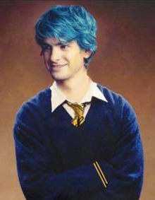

Edward Remus LupinAbout:1. Edward Remus Lupin (Teddy) was born to Nymphadora Andromeda Tonks and Remus John Lupin in 23 April 1998. 2. His Mother and father died in the Battle of Hogwats, so he lived his life with his godfather Harry James Potter. So he was grown with his god siblings James Sirius Potter, Albus Severus Potter and Lily Luna Potter. 3. She was sorted into Hufflepuff house when he first went to Hogwarts School of Witchcraft and Wizardry in 2009, at the age of 11. 4. His godparents are Harry James Potter and Ginevra Molly Weasley like already said. 5. He is a half blood wizard. 6. He was Appointed Head boy in his 7th year, he wasn't appointed as Prefect or Quidditch captain. Characteristics: 1. Clumsy 2. Silly 3. Cute Possesions: 1. Marauder's Map 2. His Mother and Father's Marraige ring. 3. A 12 ¾", Wolvine wood, Dragon Heartstring Core 4. Nimbus 2008(broomstick) Other Details: Eye Colour - Variable Hair Colour - Variable Height - Variable Species - Human/Metamorphmagus Gender - Male Patronus - Salamander Boggart - Becoming a Werewolf Quidditch Position - Chaser for Hufflepuff Favourite Colour - Yellow Speciality - Disguise Later Life: Married To: Victoire Isabelle Weasley Kids - Nymphandora Victoria Lupin (June 8, 2023), Andromeda Fluer Lupin (August 11 , 2034)(Metamorphmagus), Harry Remus Lupin (August 11, 2034)(Metamorphmagus) Professions - Auror |
 |